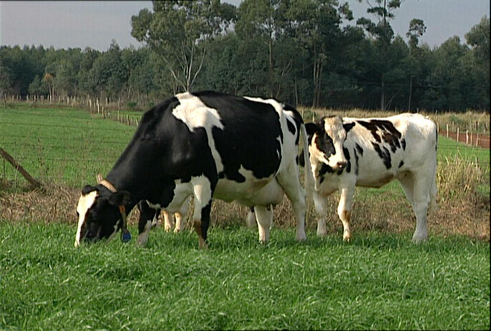
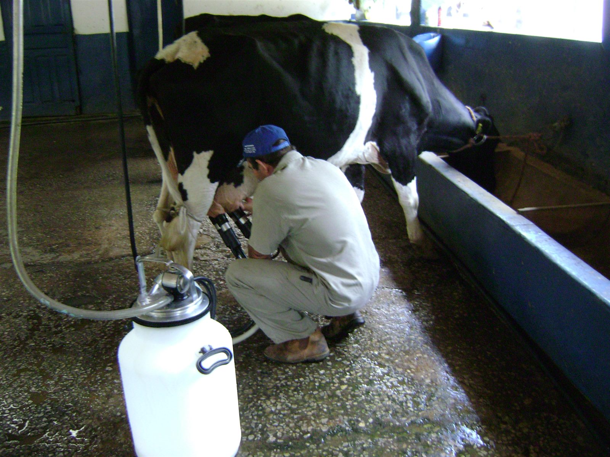

Diagnóstico:
um olhar para o negócio

 produzirnaobasta.com.br
produzirnaobasta.com.brAntes de mexer em qualquer número: o que está a seu favor, e o que está contra?
Serve para olhar
como ela está hoje, por inteiro
uma atividade: o leite, a soja, o vinhedo
começar, ampliar, mudar de atividade
É o primeiro passo: vem antes do custo, da margem e do plano.
Quanto está nas mãos do gestor?
Variação da dose ótima de nitrogênio no milho:
Separar o que se muda do que só se acompanha: é isso que a SWOT organiza.
Dentro e fora da porteira
Forças
dentro · a favor
Fraquezas
dentro · contra
Oportunidades
fora · a favor
Ameaças
fora · contra
Monte a SWOT
| Rebanho com boa genética | força |
| Ninguém anota os custos | fraqueza |
| Cooperativa abriu compra de leite na região | oportunidade |
| Previsão de estiagem para o verão | ameaça |
| Máquinas velhas, manutenção atrasada | fraqueza |
| Nova linha de crédito para irrigação | oportunidade |
| Alta do dólar encarecendo o adubo | ameaça |
Não basta listar, é preciso perguntar
Forças
O que faz a sua propriedade melhor que as vizinhas?
Fraquezas
O que está freando? O resultado é calculado ou estimado?
Oportunidades
Há cooperativa, PNAE, PAA, crédito ainda não usado?
Ameaças
Que fraqueza vira risco sério se o preço cair?
Uma propriedade de leite
- 25 ha de terra própria, parte com pastagem degradada
- 35 vacas Holandês × Jersey, cerca de 450 L por dia
- Ordenha antiga; o casal e um filho trabalham
- Leite entregue a uma cooperativa da região

Ambiente interno
Forças
- Mão de obra da família, estável
- Cooperativa perto: coleta garantida
- Terra própria, sem arrendamento
- Rebanho adaptado ao pasto
Fraquezas
- Nenhum registro de custos
- Ordenha antiga: risco na qualidade
- Parte da pastagem degradada
- Um só comprador
Ambiente externo
Oportunidades
- Pronaf Mais Alimentos para a ordenha
- Queijo artesanal, PNAE
- Assistência da EMATER/RS
- Preço de referência: Conseleite
Ameaças
- Preço do leite volátil
- Estiagens na região central
- Sucessão: o filho fica?
- Bacias leiteiras maiores
A matriz montada
Forças
- Mão de obra da família
- Cooperativa perto
- Terra própria
- Rebanho adaptado
Fraquezas
- Sem registro de custos
- Ordenha antiga
- Pastagem degradada
- Um só comprador
Oportunidades
- Pronaf Mais Alimentos
- Queijo artesanal, PNAE
- EMATER/RS
- Conseleite
Ameaças
- Preço volátil
- Estiagens
- Sucessão incerta
- Bacias concorrentes
Cruzar não é só listar
Usar o que se tem de bom para aproveitar o que aparece. Corrigir o que é fraco antes que o problema chegue.
Dois cruzamentos, duas ações
Crescer: modernizar a ordenha com crédito e assistência, melhorar a qualidade e o preço do leite.
Defender: começar o registro de custos já. Quem não conhece o custo não sabe a que preço sobrevive.
Lavoura e boi
Fsolo corrigido, maquinário próprio
Frum só comprador
Opreço em alta, câmbio favorável
Aestiagem em janeiro e fevereiro
Fmilho e silagem próprios
Frpouco dinheiro para comprar o lote
Oboi gordo mais caro na entressafra
Aração mais cara, kg vivo oscilando
Vinhedo e agricultura de precisão
Fclima e solo aptos, vinícola perto
Frsem dinheiro para 2 anos sem colheita
Ocrédito com carência para perenes
Agranizo, preço da uva oscilando
Fhistórico de mapas de colheita
Frtecnologia cara sem escala em algumas áreas
Oimagem de satélite gratuita
Aadubo caro: a sobreposição custa mais
Cada item volta como número
| estiagem, granizo, ração cara | → | cenário pessimista |
| sem capital de giro | → | crédito |
| preço em alta | → | receita |
| sem registro de custos | → | margem que ninguém vê |
| escala mínima | → | investimento que não se paga |
Item vago não diagnostica
Quanto mais específico o item, mais clara a ação.
Uma fotografia por ano
- Rever ao menos uma vez por ano
- Fazer junto: família, funcionários, extensionista
- Levar para o projeto: é a primeira página do plano
Referências
BAUM, M. E.; SAWYER, J. E.; CASTELLANO, M. J.; ARCHONTOULIS, S. V. Ranking genotype, environment, management effects on the optimum nitrogen rate for maize: a cropping system modeling analysis. Agronomy Journal, v. 116, p. 1775-1791, 2024. doi.org/10.1002/agj2.21596
OHIO STATE UNIVERSITY EXTENSION. Conducting a SWOT analysis of your agricultural business. ANR-42. Revisão de Chris Zoller, 2024.
Casos: revisões por curso e simulador de projetos do site Produzir Não Basta (produzirnaobasta.com.br).
Fotos: gado leiteiro a pasto, Palmeira/PR, Deyvid A. R. Setti (CC BY-SA 3.0) · ordenha mecânica, Andrevruas (CC BY 3.0).
Material elaborado pelo Prof. Róberson Macedo de Oliveira (Colégio Politécnico da UFSM), com apoio de IA (Claude, Anthropic) na organização didática e na diagramação; conteúdo, seleção e decisões de ensino são do docente.